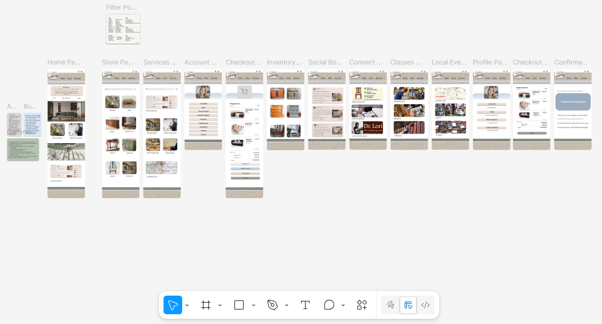
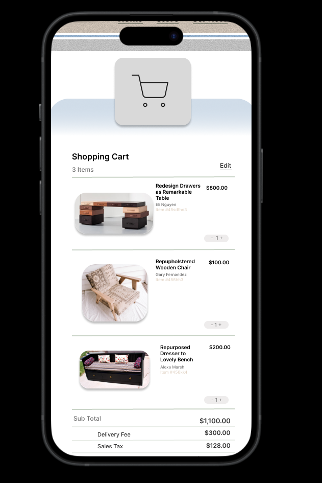
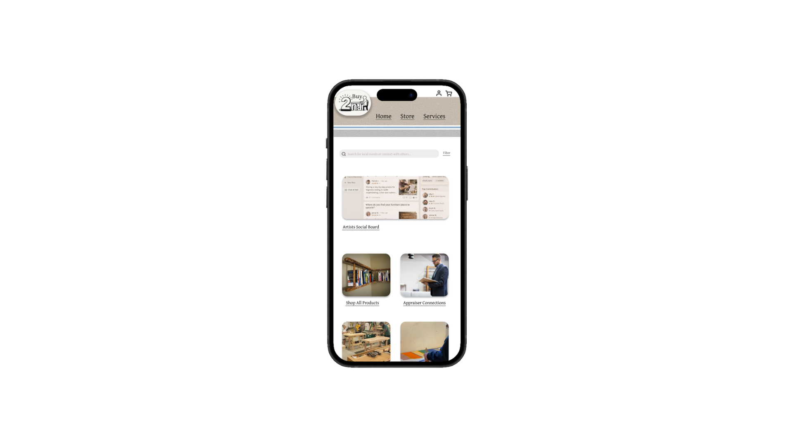
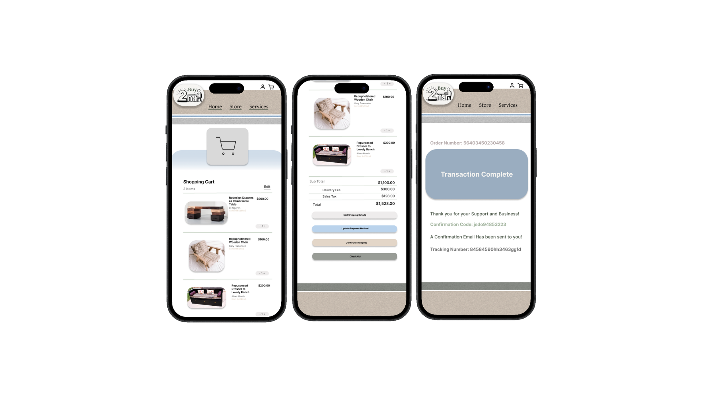
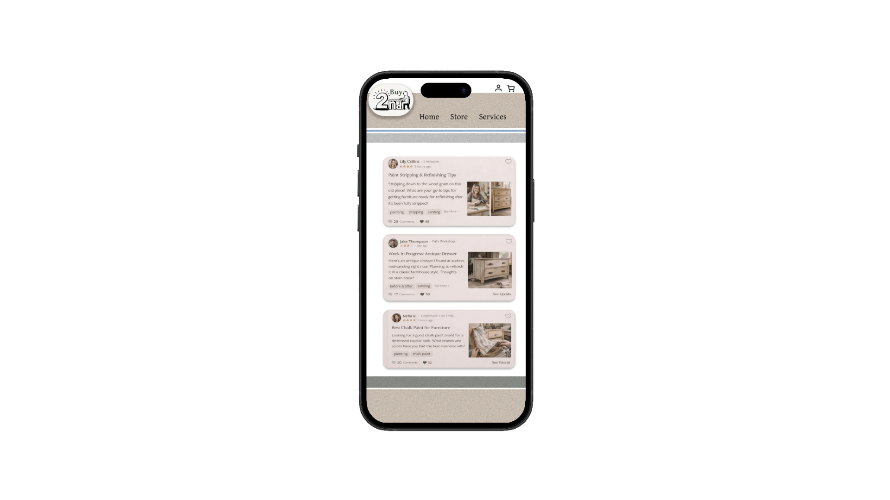
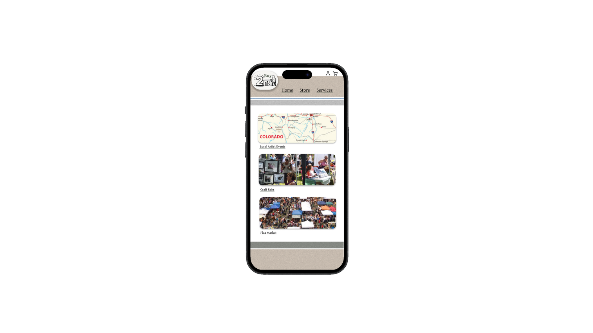
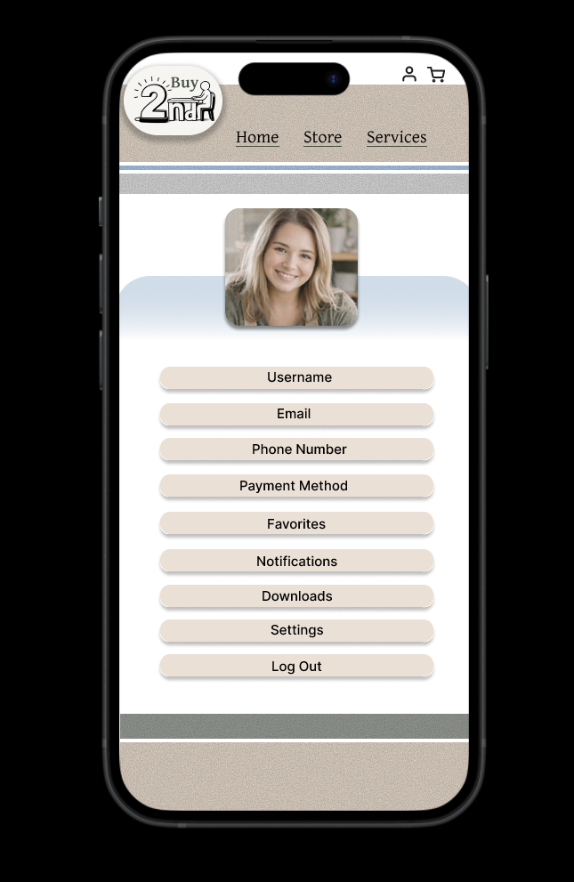

UX Strategy & Information Architecture
Furniture Flipping App Concept
Designed UX strategy and information architecture for a mobile app concept connecting furniture flippers with local buyers, focusing on trust, transaction clarity, and community.
Responsibilities
Competitive Analysis
Conducted competitive analysis of resale platforms to understand gaps in local selling, buyer trust, and creator visibility.
Concept Development
Developed the app concept and value proposition around transformation storytelling, local buying, and furniture flipping community needs.
Information Architecture
Designed the information architecture and navigation model around Browse, Sell, and Community modes.
User Flow Design
Created user flows for core transaction scenarios, including listing creation, discovery, meetup scheduling, and seller reviews.
Interactive Prototyping
Built an interactive Figma prototype covering browse, listing, and transaction workflows.
Testing & Iteration
Used prototype feedback to simplify the listing creation flow and improve mobile task completion.

Overview
Designing a resale experience for furniture flippers and local buyers
Furniture flipping—buying, refinishing, and reselling used furniture—is a growing side economy with an active community of creators and buyers.
Existing resale platforms were not designed for the unique needs of this niche: buyers want to see transformation stories, sellers need to communicate craft and quality, and transactions require local coordination.
Service Value
Creating trust and clarity in local furniture transactions
The app concept creates value by giving furniture flippers a more tailored space to show their craft while helping buyers understand item quality, transformation history, pickup expectations, and seller credibility before committing to a purchase.
Resale platforms reviewed through competitive analysis, including major local and niche marketplace tools.
Prototype screens created to cover browse, listing, transaction, and account experiences.
Core transaction flows designed around listing, discovery, pickup scheduling, and seller review.

Problem & Goals
Helping sellers communicate quality and buyers feel safer
Furniture flippers using general resale platforms reported frustration with low visibility for their work, difficulty communicating quality and provenance, and safety concerns around local meetups.
The concept aimed to address these friction points while creating a community-centered transaction experience for creators and buyers.
Seller Visibility
Furniture flippers needed better ways to show before-and-after transformations, craft process, materials, and quality.
Buyer Trust
Buyers needed clearer item details, seller credibility, pickup expectations, and review information before purchasing.
Local Safety
Transactions needed safer meetup coordination, confirmation steps, and local pickup support.
User Scenario
Browse Local Pieces
A buyer opens the app to explore refinished furniture available nearby.
Review the Transformation
The buyer checks before-and-after photos, materials, process notes, and seller details.
Ask Questions or Purchase
The buyer evaluates item quality, price, location, and pickup expectations before committing.
Schedule Pickup
The buyer and seller coordinate a local pickup using clear meetup and confirmation steps.
Leave a Review
After the transaction, the buyer leaves a seller review to support trust across the community.

My Role
Owning the concept from research through prototype
This was an independent concept project. I owned all phases from research through interactive prototype, treating it as a full UX strategy engagement to develop and demonstrate my process.
My role included research, competitive analysis, information architecture, user flows, feature requirements, and interactive prototyping.
Independent Furniture Flipper
Seller and creator
This user refinishes furniture and needs a platform that communicates craftsmanship, transformation value, and seller credibility.
Goals
- Show before-and-after transformations
- Explain materials and process
- Manage listings from a phone
Local Furniture Buyer
Shopper looking for unique pieces
This user wants one-of-a-kind furniture but needs confidence in quality, price, seller trust, and pickup safety.
Goals
- Find unique local furniture
- Understand item quality
- Coordinate safe pickup

Discovery & Constraints
Researching resale platforms and furniture flipping communities
Research included competitive analysis of eight resale platforms, interviews with a furniture flipper, and observation of online furniture flipping communities.
The primary design constraint was mobile-first: the target audience managed all selling activity from their phones.
Marketplace Gaps
General resale platforms lacked strong support for transformation storytelling and craft-based item value.
Mobile Creation
Sellers needed listing creation to work comfortably from a phone, including photos, item details, drafts, and pickup information.
Community Context
Furniture flipping communities value inspiration, process sharing, finished product quality, and buyer-seller trust.
Key Features
Transformation Story Listings
Listings were designed to support before-and-after photos, materials documentation, process notes, and quality details that help sellers communicate craft value.
Browse, Sell, and Community Navigation
The app was organized around three core modes: Browse for discovery and shopping, Sell for listing creation and management, and Community for inspiration and connection.
Trust and Safety in Local Pickup
Safety features were integrated into the meetup flow, including location sharing, confirmation steps, pickup scheduling, and review support.

Information Architecture & User Flows
Structuring the app around browsing, selling, and community trust
The app was organized around three core modes: Browse, Sell, and Community. A persistent bottom navigation enabled quick switching between modes.
Primary flows included creating a listing with a transformation story, discovering and purchasing a local item, scheduling a pickup meetup, and leaving a seller review.
Listing Structure
Listing structure was designed to support transformation storytelling with before-and-after photos, materials documentation, and process notes.

Wireframes & Prototypes
Building a complete interactive mobile prototype
A complete interactive prototype was built in Figma covering the browse, listing, and transaction flows. The prototype included more than 40 screens with realistic content.
Prototype testing with four participants from the furniture flipping community revealed that the listing creation flow was too long for mobile completion in a single session.
Interactive prototype screens created with realistic content and mobile-first flows.
Participants tested the prototype from the furniture flipping community.
Listing creation steps reduced after testing by consolidating related fields.
Requirements & Acceptance Criteria
Defining scope, transaction clarity, and trust requirements
A feature requirements document specified scope versus future phases, covering listing fields, transaction flow requirements, community features, and trust and safety requirements. Accessibility requirements covered touch target sizing, color contrast, and screen reader support.
Prototype Walkthrough
Interactive Figma prototype
The Figma prototype demonstrates the mobile app concept, including browsing furniture, reviewing transformation stories, creating a listing, coordinating pickup, and supporting seller trust.

Analytics, Iteration, Outcomes & Next Steps
Improving mobile listing creation through testing
Prototype testing revealed that the listing creation flow was too long for mobile completion in a single session. The flow was redesigned to support saving drafts and resuming later.
The step count was reduced from seven to four by consolidating related fields. A second test round validated the revised flow. The prototype was well received, with feedback recommending larger font sizes in future iterations.
Conduct a technical feasibility review for transaction, listing, and safety features.
Explore business model options for a niche resale marketplace.
Create a higher-fidelity prototype for investor or stakeholder presentation.
Next Steps
Next steps include a technical feasibility review, business model exploration, and a higher-fidelity prototype for investor presentation.
Future iterations would include larger font sizes, expanded seller profile features, stronger pickup safety controls, and more detailed community interaction patterns.
Learnings
This project strengthened my ability to design a marketplace concept around a specific niche community rather than relying on generic resale patterns.
I also learned how important mobile-first flow length, draft saving, and trust-building content are when designing transaction experiences for local buyers and sellers.